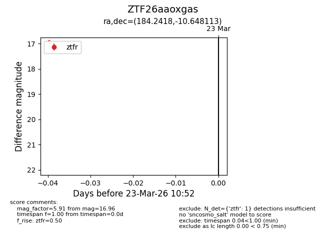
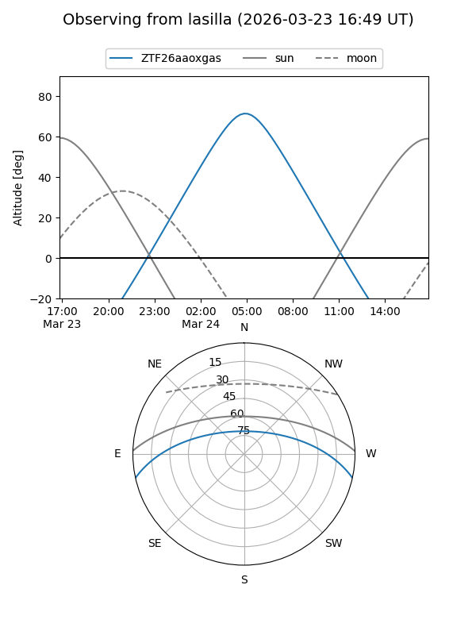
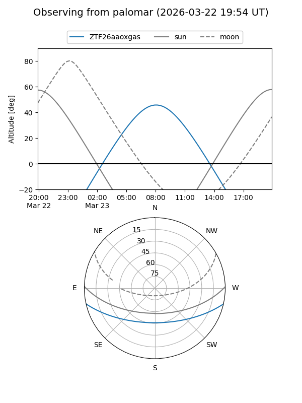

ZTF26aaoxgas
Target ZTF26aaoxgas at 2026-03-23 10:55
Aliases and brokers:
FINK: link
Lasair: link
ALeRCE: link
alt names
ZTF26aaoxgas (ztf,fink_ztf)
Coordinates:
equatorial (ra, dec) = 184.2418,-10.64811
equatorial (HMS+DMS) = 12:16:58.03,-10:38:53.21
galactic (l, b) = (289.3065,+51.30940)
Flags:
Photometry:
last ztfr=16.96
1 ztfr detections
Lightcurve

Visibility


Additional plots